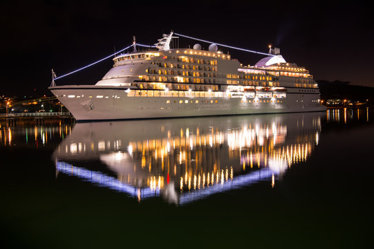
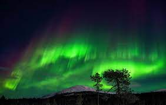
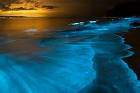

BALCONY
A balcony is a place where solace can be found and leisure time can be spent.
PARAGLIDING 🪂
.png)
Paragliding is a type of extreme aerial sports, and it allows one to run off the slopes with free parachutes. Paragliding is generally more accessible than other extreme sports since it does not require a special take off or a landing track.
CRUISE 🚢
A cruise is a vacation spent on a ship that sails the ocean, periodically stopping in ports for sightseeing.
AURORA
An aurora also commonly known as polar lights or northern lights is a natural light display in Earth's sky, predominantly seen in high-latitude regions. Auroras display dynamic patterns of brilliant lights that appear as curtains, rays, spirals, or dynamic flickers covering the entire sky.
BOOKS 📚

Books are the hub of all information and knowledge. They help us gather data and understand it better. Reading various books helps us increase our vocabulary, creativity and imagination. It stimulates the thought process of humans and changes their lifestyle as well.
BIOLUMINESCENCE
Bioluminescence is the production and emission of light by a living organism. Bioluminescent creatures are found throughout marine habitats, from the ocean surface to the deep seafloor.
LANTERN 🕯
Sky lanterns have been made for centuries in cultures around the world, to be launched for play or as part of long-established festivities.
MOUNTAINS ⛰
.png)
Mountains are an escape from real world.